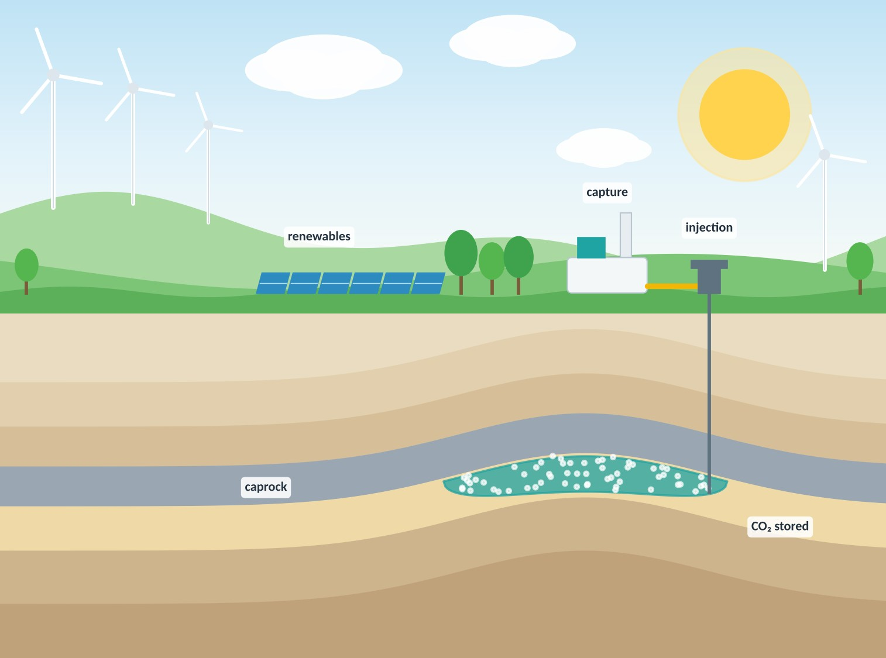
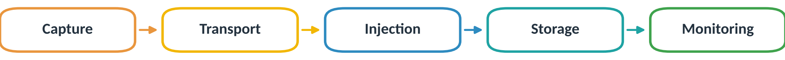
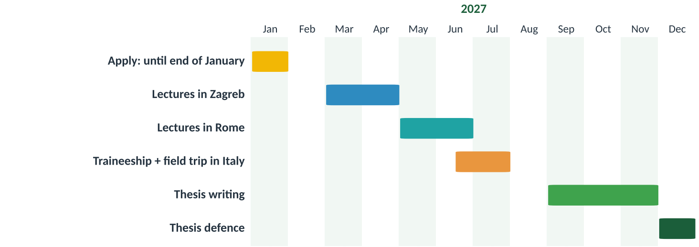

University of Zagreb · Sapienza University of Rome
International Master in
One year. Two cities. A career in keeping carbon underground.
Your questions, answered
Apply from the publication of the official call until the end of January 2027
Supported by CO2GeoNet, the European Network of Excellence on CO₂ Geological Storage
↓ Brochure4 pages, A5 · Word↓ Leaflet: what will you study?1 page, A4 · WordThe master Getting in What will I study? Time and place Studying and costs Join the list Contact
The master in one minute
Yes. The 2026/27 edition starts in March 2027 and ends with the thesis defence in December 2027.
60 ECTS and a joint diploma. The University of Zagreb and Sapienza University of Rome run it together, supported by CO2GeoNet, the European Network of Excellence on CO₂ Geological Storage. Your diploma carries the signatures of both rectors.
English, from the first lecture to the thesis defence.
Yes. Graduates receive their diplomas at the 2028 CO2GeoNet Open Forum, and CO2GeoNet covers the costs.
Getting in
Very likely. The programme is designed for graduates with a master's degree (300 ECTS in total) in Earth sciences or petroleum science and engineering, and it is open to related fields too.
Yes. With a basic grounding in geoscience, you'll have a short online interview so we can make sure you'll follow the lectures comfortably. Generally, applicants who take it are accepted.
No. The programme's Scientific-Educational Council assesses non-EU degrees for admission.
Three documents, in English: a motivation letter, your CV and official evidence of your degree.
Until the end of January 2027. This call is published on this page. Can't wait? Email us and we'll add you to our list of applicants.
We confirm whether you're eligible. You then receive the payment details. If you come from outside the EU, we help as far as we can with paperwork and information on accommodation.
What will I study?
Everything it takes to store CO₂ safely underground. Fourteen modules, taught in English by lecturers from the partner universities and CO2GeoNet research institutes, prepare you to work with every specialist on a CCS project.

The same subsurface skills are used in geothermal energy and underground energy storage.
Time and place

In March 2027. Teaching runs in blocks of one or two weeks, first in Zagreb, then in Rome, followed by a traineeship and a mandatory field trip in Italy. The thesis follows in autumn, with an in-person defence in December.
Studying and costs
Partly. While courses may be held online, the field work in Italy (and the thesis defence) need you there in person.
€2,200 tuition. Travel, food and accommodation in Zagreb and Rome are not included.
After we confirm you're eligible, by bank transfer to the Faculty account, quoting the reference from your confirmation.
Join the list of applicants
Click a button below: a message to us opens with the recipient, subject and questions already written. Fill in the lines, attach your motivation letter, CV and evidence of your degree (in English) and press Send. Applications are open until the end of January 2027.
Your email opens with these lines ready to fill in:
✉ Open in my email appGmailOutlook.com
Nothing opens? Write to domagoj.vulin@rgn.unizg.hr and include the lines above. Nothing is stored on this page: the message goes from your own email account straight to the programme coordinator.
↓ Brochure4 pages, A5 · Word↓ Leaflet: what will you study?1 page, A4 · Word
CO₂ Geological Storage · International Master · 2027 edition